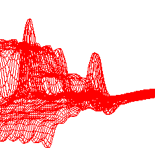
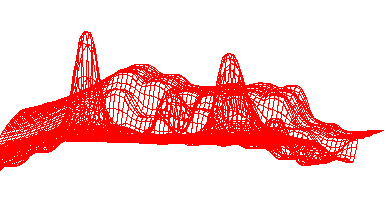
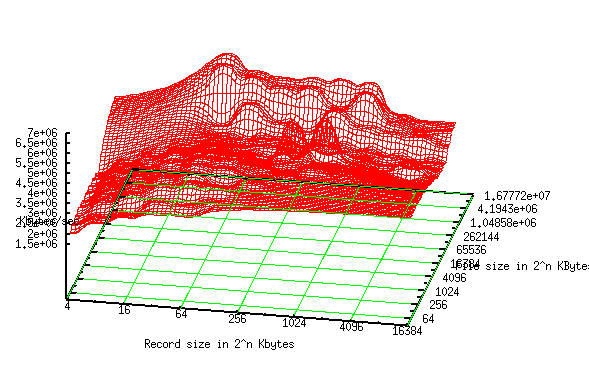
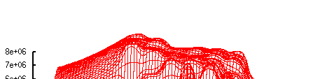
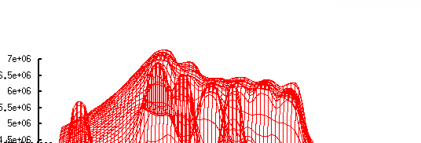

iozone benchmark analasis
5/12/2010
I have completeted my analasis of the IOZone Benchmark results. IOzone is a file system benchmark but can be used to test network performance when measureing the performance of network filesystems like NFS. First we shall look at the local IO performance. Surprisingly, despite the smaller size and higher speed of the Cisco's disk, they performed somewhat worse when looking at dramatic peaks alone. It looks like when IOzone hits the sweet spots of the Sun's disks the performance skyrockets but otherwise its on par with the Cisco. Those sweetspots are consistant throughout the Suns performance graphs indicated by the spikes below. 
two different measurements but the spikes are in the same place. The Cisco however has a mellow peak around large files with small writes.

Here, pictured below, it actually beats the sun.


Finally, we conclude that the overall performance belongs to the Ciscos because their more natural heights consistently beat the Sun's performance.
Next we will compare the performance of the NFS filesystem across different networks. In the case of this test, we compare 1000mb Ethernet with 10Gbit Ethernet. IOZone has a test case the can count the time it takes to close files between writes in its tests as well, it also unmounts the file system between tests to clear the local cache of the NFS directory. The Sun nodes are connected by a 1000 megabit network, the Cisco blades are connected by gigabit Fiber. In these tests, the Ciscos also had, more regular graphs than the suns but they were unambiguously more performant. The lower bounds and upper bounds were both higher than the eddies of the Sun's graphs.
the top graph is the Sun's result and the lower one is the Cisco's. They both plateau in the same regions but the Cisco's even peaks are consistently higher than those of the sun by a linear degree. This means that not only are the Cisco's network transfer speeds faster but more stable than those of the Suns. Stable results imply more stable performance as well which is something to be valued in a high performance environment
On I/O tests alone the Ciscos win but there can be more performance testing done here. There is a software suite specificaly designed for performance testing but not for cluster performance, individual performance across operating systems. Phoronix test suite is a good candidate for further comparison. It would be easiest to do this because it is non invasive to the software environment. It does not use any package management and pritty much compiles most of the tests on sight. The tests are downloaded after installation (if you can call that an install) and include computationally intensive tests, memory performance, filesystem performance, but not network performance. It also has tools that allows one to compare the results.